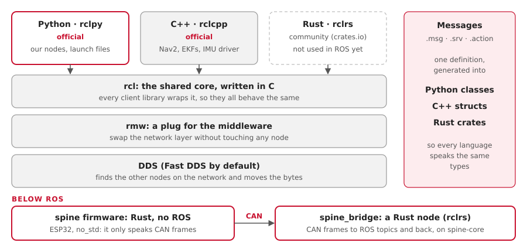

Our ROS nodes are Python, and the firmware and hardware drivers are Rust. The C++ we inherited is moving to Rust (Ben, 10 Oct). ROS 2 lets each program pick its own language, because programs only meet through messages.
How languages fit into ROS 2

- Every node is its own program, so a Python node and a C++ node talk without knowing it.
- Each
.msgfile is generated into Python, C++ and Rust, so every language sees the same types. - The client libraries all wrap one C core,
rcl, so they behave the same.
What we use, and where
| Code | Language | Why |
|---|---|---|
| Our ROS nodes: ego, drivers, bridges, adapters | Python | Glue that runs 50 times a second or less. Quick to write and read. The same file runs on any computer, with no cross-compiling. |
| Launch files | Python | That's how ROS 2 launch works |
| Stock packages: Nav2, the EKFs, twist_mux | C++ | Not ours: we only configure them |
The IMU driver: yahboom_imu_cpp, and Ben's Rust twin aav_imu_yahboom |
C++, moving to Rust | The Rust twin becomes the default; then the C++ goes |
The radar clustering, aav_object_detection |
C++, moving to Rust | Inherited from the 2025-26 team. It becomes a Rust ROS node (rclrs) |
The spine firmware, firmware/spine |
Rust, no_std |
Memory-safe, and its logic is tested on a laptop |
| Today's ESP32 and Pico firmware | C++ (Arduino) | Inherited. The spine (Rust) replaces the ESP32; the Picos get Rust twins (Embassy) |
Is C++ too risky?
Memory bugs and crashes are a fair worry with C++. In this stack:
- The C++ we run is almost all stock packages that thousands of robots use. We wrote none of it.
- Our own code is Python and Rust, and both are memory-safe. The inherited C++ moves to Rust.
- Each node is a separate process. A crash takes down one node, not the whole system.
- Safety never rests on one program: ego's timeout and the spine's watchdog stop the car if a node dies.
What if everything were Rust?
| You'd get | You'd give up |
|---|---|
| Memory safety and speed in every node | Official support: rclpy and rclcpp are official; rclrs is a community project |
| One language from the firmware up | Examples: most ROS answers and tutorials are Python or C++ |
| Cargo, and its tooling | Simple builds: colcon needs a cargo plugin, and builds get slower |
| Nothing in Nav2 or robot_localization: they stay C++, and we'd still only configure them | |
| Launch files: they stay Python | |
| An easy hand-over: next year's team has to know Rust |
Where Rust stands in October 2026:
- Message crates ship with Jazzy. Our Pixi install already has them, for example
share/sensor_msgs/rust/. rclrs, the library for writing nodes, comes from crates.io and is still 0.x.- It works here.
examples/rust-listener(rclrs0.8,ros-env0.3) built in 18 seconds with plaincargo build, and printed ego's commands live from the turtle run. Untested on a Mac.
Rust on the Pi and the ESP32
| Target | Rust there | A ROS node? |
|---|---|---|
| Orin, Raspberry Pi (Linux, ARM) | aarch64-unknown-linux-gnu |
Yes, with rclrs |
| ESP32 (bare metal) | no_std with esp-hal |
No: it talks CAN to spine_bridge. No micro-ROS for now: we think again once we see the hardware (Ben, 11 Oct) |
| Raspberry Pi Pico 2 | no_std, thumbv8m.main-none-eabihf |
No, the same as the ESP32 |
The plan
| When | What |
|---|---|
| Now | Python for ROS nodes; Rust for the spine firmware (started: spine-core, 47 tests) |
| Done | one rclrs node, built with Cargo in the Pixi environment: pixi run rust-listener |
| Later | port a node where Rust pays off, such as ego, once the car drives |